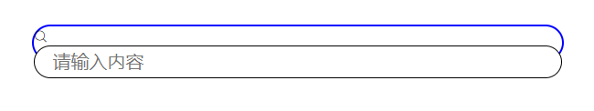
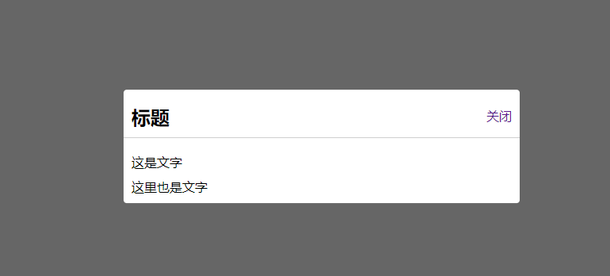

<!DOCTYPE html>
<html>
<head><meta name="generator" content="Hexo 3.9.0">
  <meta charset="utf-8">
  

  
  <title>css案例总结 | SheilaTing 的博客呀</title>
  <meta name="viewport" content="width=device-width, initial-scale=1, maximum-scale=1">
  <meta name="description" content="第一个小案例​    模仿写了一个谷歌搜索的页面，发现自己在布局方面还有许多问题，这么一个简单的页面，我竟然花费了许久还没做完没，汗颜 第一个问题是：DOM结构的问题，布局很重要，然后就是css 的小细节，比如我再做搜索框的时候，思路是，用一个div 包裹一个 input 然后抹去input 的默认样式，使用div 边框伪造一个input 的边框来显示，然后两头有两个图标，搜索和语音按钮，设置di">
<meta property="og:type" content="article">
<meta property="og:title" content="css案例总结">
<meta property="og:url" content="http://yoursite.com/2020/04/13/css案例总结/index.html">
<meta property="og:site_name" content="SheilaTing 的博客呀">
<meta property="og:description" content="第一个小案例​    模仿写了一个谷歌搜索的页面，发现自己在布局方面还有许多问题，这么一个简单的页面，我竟然花费了许久还没做完没，汗颜 第一个问题是：DOM结构的问题，布局很重要，然后就是css 的小细节，比如我再做搜索框的时候，思路是，用一个div 包裹一个 input 然后抹去input 的默认样式，使用div 边框伪造一个input 的边框来显示，然后两头有两个图标，搜索和语音按钮，设置di">
<meta property="og:locale" content="default">
<meta property="og:image" content="http://yoursite.com/2020/04/13/css案例总结/sousuo.png">
<meta property="og:image" content="http://yoursite.com/2020/04/13/css案例总结/modal.png">
<meta property="og:image" content="http://yoursite.com/2020/04/13/css案例总结/tooltip.png">
<meta property="og:updated_time" content="2020-04-14T02:19:52.535Z">
<meta name="twitter:card" content="summary">
<meta name="twitter:title" content="css案例总结">
<meta name="twitter:description" content="第一个小案例​    模仿写了一个谷歌搜索的页面，发现自己在布局方面还有许多问题，这么一个简单的页面，我竟然花费了许久还没做完没，汗颜 第一个问题是：DOM结构的问题，布局很重要，然后就是css 的小细节，比如我再做搜索框的时候，思路是，用一个div 包裹一个 input 然后抹去input 的默认样式，使用div 边框伪造一个input 的边框来显示，然后两头有两个图标，搜索和语音按钮，设置di">
<meta name="twitter:image" content="http://yoursite.com/2020/04/13/css案例总结/sousuo.png">
  
    <link rel="alternate" href="/atom.xml" title="SheilaTing 的博客呀" type="application/atom+xml">
  
  
    <link rel="icon" href="/favicon.png">
  
  
    <link href="//fonts.googleapis.com/css?family=Source+Code+Pro" rel="stylesheet" type="text/css">
  
  <link rel="stylesheet" href="/css/style.css">
</head>
</html>
<body>
  <div id="container">
    <div id="wrap">
      <header id="header">
  <div id="banner"></div>
  <div id="header-outer" class="outer">
    <div id="header-title" class="inner">
      <h1 id="logo-wrap">
        <a href="/" id="logo">SheilaTing 的博客呀</a>
      </h1>
      
    </div>
    <div id="header-inner" class="inner">
      <nav id="main-nav">
        <a id="main-nav-toggle" class="nav-icon"></a>
        
          <a class="main-nav-link" href="/">Home</a>
        
          <a class="main-nav-link" href="/archives">Archives</a>
        
      </nav>
      <nav id="sub-nav">
        
          <a id="nav-rss-link" class="nav-icon" href="/atom.xml" title="RSS Feed"></a>
        
        <a id="nav-search-btn" class="nav-icon" title="Search"></a>
      </nav>
      <div id="search-form-wrap">
        <form action="//google.com/search" method="get" accept-charset="UTF-8" class="search-form"><input type="search" name="q" class="search-form-input" placeholder="Search"><button type="submit" class="search-form-submit">&#xF002;</button><input type="hidden" name="sitesearch" value="http://yoursite.com"></form>
      </div>
    </div>
  </div>
</header>
      <div class="outer">
        <section id="main"><article id="post-css案例总结" class="article article-type-post" itemscope itemprop="blogPost">
  <div class="article-meta">
    <a href="/2020/04/13/css案例总结/" class="article-date">
  <time datetime="2020-04-13T07:46:22.000Z" itemprop="datePublished">2020-04-13</time>
</a>
    
  </div>
  <div class="article-inner">
    
    
      <header class="article-header">
        
  
    <h1 class="article-title" itemprop="name">
      css案例总结
    </h1>
  

      </header>
    
    <div class="article-entry" itemprop="articleBody">
      
        <h4 id="第一个小案例"><a href="#第一个小案例" class="headerlink" title="第一个小案例"></a>第一个小案例</h4><p>​    模仿写了一个谷歌搜索的页面，发现自己在布局方面还有许多问题，这么一个简单的页面，我竟然花费了许久还没做完没，汗颜</p>
<p>第一个问题是：DOM结构的问题，布局很重要，然后就是css 的小细节，比如我再做搜索框的时候，思路是，用一个div 包裹一个 input 然后抹去input 的默认样式，使用div 边框伪造一个input 的边框来显示，然后两头有两个图标，搜索和语音按钮，设置div 的宽高后，设置input宽高各100% 继承div 的宽度和高度，结果发现input 被顶下来了，搞了好久才发现，原因是div 里面还有一个搜索按钮的伪类，当我将搜索按钮设置定位后，它脱离了文档流，自然不占据空间，此时，input 就与div 完没重合！哎，这点小毛病我看了半天没发现。。。。。。</p>
<p>还有就是盒模型水平居中的问题，其实设置好盒模型的宽度后，设置margin 左右 auto即可，也被我遗忘得一干二净！</p>
<p>还有，背景图片是不会撑起盒模型元素的高度和宽度的，它只是一个背景而已，盒子里面没有内容，它也不会显示；</p>
<p>还有，input 的outline 属性是点击它时他的外边框，以前都没注意，或者忘了，哈哈哈</p>
<p></p>
<h4 id="第二个小案例"><a href="#第二个小案例" class="headerlink" title="第二个小案例"></a>第二个小案例</h4><p>​    实现效果为，点击A链接弹出弹框和遮罩层，dom结构中给遮罩层加一个div 包裹弹框，然后给div设置遮罩层效果，利用:target 伪元素控制遮罩层的显示和隐藏。</p>
<p></p>
<h4 id="第三个小案例"><a href="#第三个小案例" class="headerlink" title="第三个小案例"></a>第三个小案例</h4><p>​    模仿文字悬浮提示</p>
<p>DOM结构很重要</p>
<p>实现效果为 一行文字鼠标悬停时有小框提示，难点在于小三角的定位，情况复杂时还要考虑到元素的 z-index，总之悬浮框的层级要高一些才行，悬浮框在dom结构中被包裹在文字所处的div中，由于后期要对三角做定位，所以要先给文字做个相对定位，到时候三角相对于文字来定位即可，三角可以通过：before 伪元素来实现，利用border的特性，不需要的边设置透明，另一边设置想要的颜色；</p>
<p></p>
<h4 id="第四个小案例"><a href="#第四个小案例" class="headerlink" title="第四个小案例"></a>第四个小案例</h4><p>​    实现滚动页面时，页面上的标题被下一个推走或者覆盖的效果，这里使用 positon 的 sticky 属性可轻易实现</p>
<p>特性 </p>
<p>一定要设置top  当页面向下滚动时，被视窗顶部拦住，被父级块元素的 下边缘推走</p>
<p> 如果出现多个sticky，放置在同一容器内，会出现下一个 sticky元素把上一个“覆盖””的效果</p>
<p> 如果出现多个sticky，放置在并列的多个块级容器内，会 出现下一个sticky元素把上一个“推走”的效果</p>

      
    </div>
    <footer class="article-footer">
      <a data-url="http://yoursite.com/2020/04/13/css案例总结/" data-id="ck8za0dm30000d0w1c890c96f" class="article-share-link">Share</a>
      
      
    </footer>
  </div>
  
    
<nav id="article-nav">
  
  
    <a href="/2020/04/11/css-float/" id="article-nav-older" class="article-nav-link-wrap">
      <strong class="article-nav-caption">Older</strong>
      <div class="article-nav-title">css-float</div>
    </a>
  
</nav>

  
</article>

</section>
        
          <aside id="sidebar">
  
    

  
    
  <div class="widget-wrap">
    <h3 class="widget-title">Tags</h3>
    <div class="widget">
      <ul class="tag-list"><li class="tag-list-item"><a class="tag-list-link" href="/tags/css/">css</a></li><li class="tag-list-item"><a class="tag-list-link" href="/tags/js/">js</a></li><li class="tag-list-item"><a class="tag-list-link" href="/tags/webpack/">webpack</a></li><li class="tag-list-item"><a class="tag-list-link" href="/tags/网站建站案例练习/">网站建站案例练习</a></li></ul>
    </div>
  </div>


  
    
  <div class="widget-wrap">
    <h3 class="widget-title">Tag Cloud</h3>
    <div class="widget tagcloud">
      <a href="/tags/css/" style="font-size: 10px;">css</a> <a href="/tags/js/" style="font-size: 10px;">js</a> <a href="/tags/webpack/" style="font-size: 10px;">webpack</a> <a href="/tags/网站建站案例练习/" style="font-size: 10px;">网站建站案例练习</a>
    </div>
  </div>

  
    
  <div class="widget-wrap">
    <h3 class="widget-title">Archives</h3>
    <div class="widget">
      <ul class="archive-list"><li class="archive-list-item"><a class="archive-list-link" href="/archives/2020/04/">April 2020</a></li><li class="archive-list-item"><a class="archive-list-link" href="/archives/2019/08/">August 2019</a></li><li class="archive-list-item"><a class="archive-list-link" href="/archives/2019/07/">July 2019</a></li><li class="archive-list-item"><a class="archive-list-link" href="/archives/2019/06/">June 2019</a></li><li class="archive-list-item"><a class="archive-list-link" href="/archives/2018/04/">April 2018</a></li></ul>
    </div>
  </div>


  
    
  <div class="widget-wrap">
    <h3 class="widget-title">Recent Posts</h3>
    <div class="widget">
      <ul>
        
          <li>
            <a href="/2020/04/13/css案例总结/">css案例总结</a>
          </li>
        
          <li>
            <a href="/2020/04/11/css-float/">css-float</a>
          </li>
        
          <li>
            <a href="/2020/04/10/markdown-常用语法/">markdown 常用语法</a>
          </li>
        
          <li>
            <a href="/2020/04/10/hello-world/">Hello World</a>
          </li>
        
          <li>
            <a href="/2020/04/06/css学习笔记/">css学习笔记</a>
          </li>
        
      </ul>
    </div>
  </div>

  
</aside>
        
      </div>
      <footer id="footer">
  
  <div class="outer">
    <div id="footer-info" class="inner">
      &copy; 2020 John Doe<br>
      Powered by <a href="http://hexo.io/" target="_blank">Hexo</a>
    </div>
  </div>
</footer>
    </div>
    <nav id="mobile-nav">
  
    <a href="/" class="mobile-nav-link">Home</a>
  
    <a href="/archives" class="mobile-nav-link">Archives</a>
  
</nav>
    

<script src="//ajax.googleapis.com/ajax/libs/jquery/2.0.3/jquery.min.js"></script>


  <link rel="stylesheet" href="/fancybox/jquery.fancybox.css">
  <script src="/fancybox/jquery.fancybox.pack.js"></script>


<script src="/js/script.js"></script>


  </div>
</body>
</html>